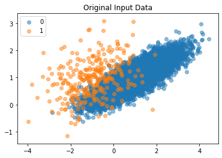
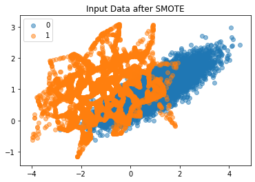
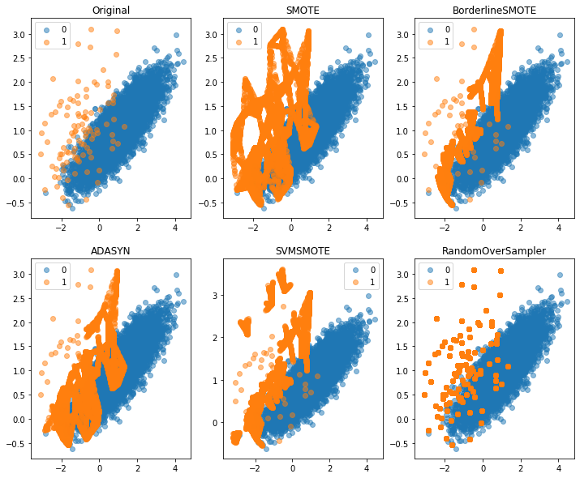
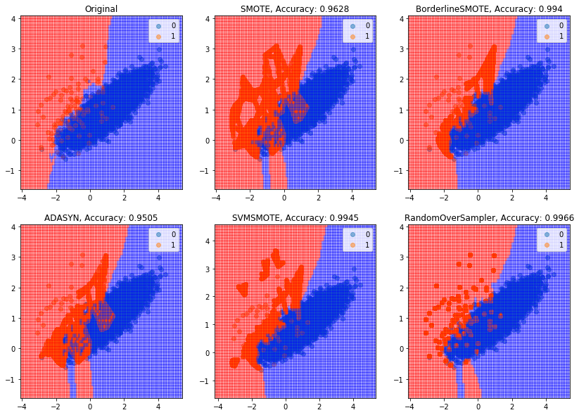

SMOTE (Synthetic Minority Oversampling Technique)
Posted on Tue 14 January 2020 in misc
Several machine learning classification techniques tend to perform poorly on datasets where the target class (the minority class) represents a small fraction of the overall data. However, sometimes it is the minority class that we are interested in. Examples include medical applications in which we try to predict the occurrence of a disease.
We can solve this problem by creating new samples from the minority class. A common way to do this is by using SMOTE (Synthetic Minority Oversampling Technique). SMOTE picks a member from the minority class and then finds its k nearest neighbors. It attempts to draw a line between these samples and then picks a point on this line to synthesize a new sample. SMOTE was original suggested in 2002, you can find the paper here.
This leads to realistic samples and models perform better than simply duplicating minority class samples because in the latter case no new information is added to the model.
from collections import Counter
from sklearn.datasets import make_classification
from imblearn.over_sampling import SMOTE
from matplotlib import pyplot as plt
from numpy import where
import numpy as np
X, y = make_classification(n_samples=10000, n_features=2, n_redundant=0,
n_clusters_per_class=1, weights=[0.97], flip_y=0, random_state=1)
counter = Counter(y)
print("Original distribution: ",counter)
for label, _ in counter.items():
row_ix = where(y == label)[0]
plt.scatter(X[y==label, 0], X[y==label, 1], label=str(label), alpha=0.5)
plt.legend()
plt.title("Original Input Data");
Original distribution: Counter({0: 9700, 1: 300})

oversample = SMOTE()
X, y = oversample.fit_resample(X, y)
counter = Counter(y)
print("SMOTE distribution: ",counter)
for label, _ in counter.items():
row_ix = where(y == label)[0]
plt.scatter(X[y==label, 0], X[y==label, 1], label=str(label), alpha=0.5)
plt.legend()
plt.title("Input Data after SMOTE");
SMOTE distribution: Counter({0: 9700, 1: 9700})

As we can see in the above graphs, the distribution of our data has changed dramatically. The minority class initially represented just 3% of our data but now our dataset has equal representation from both classes.
Imbalanced learn also supports extensions of SMOTE that are more selective about which samples to use.
Borderline-SMOTE:
This method arguees that misclassifefd samples of the monirity class are more likely to be close to the decision boundry and picks samples from these instances.
Adaptive Synthetic Sampling (ADASYN):
ADASYN samples from minority samples that are rarer or have lower densities in the sample space. ADASYN focuses on outliers whereas SMOTE focuses on both inliers and outliers. It selects these samples because they tend to be harder to learn.
Random Over-Sampling:
This is a simple strategy in which samples are drawn from existing members of the minority class (with replacement)
Below we see the results of several oversampling methods. In all cases, the classes become balanced (equally represented in our dataset).
from imblearn.over_sampling import ADASYN
from imblearn.over_sampling import SVMSMOTE
from imblearn.over_sampling import BorderlineSMOTE
from imblearn.over_sampling import RandomOverSampler
X, y = make_classification(n_samples=10000, n_features=2, n_redundant=0,n_clusters_per_class=1, weights=[0.99], flip_y=0, random_state=1)
func_list=[Counter, SMOTE, BorderlineSMOTE, ADASYN, SVMSMOTE, RandomOverSampler]
titles=['Original','SMOTE', 'BorderlineSMOTE', 'ADASYN', 'SVMSMOTE', 'RandomOverSampler']
counter=Counter(y)
fig = plt.figure(figsize=(12,10))
for idx, func in enumerate(func_list):
fig.add_subplot(2, 3, idx+1)
if idx==0:
for label, _ in counter.items():
plt.scatter(X[y==label, 0], X[y==label, 1], label=str(label), alpha=0.5)
plt.legend()
plt.title('Original')
continue
X_temp, y_temp = func_list[idx]().fit_resample(X,y)
counter_temp=(func_list[0](y_temp))
for label, _ in counter_temp.items():
plt.scatter(X_temp[y_temp==label, 0], X_temp[y_temp==label, 1], label=str(label), alpha=0.5)
plt.legend()
plt.title(titles[idx])

We will also explore the decision boundaries and accuracy scores achieved by over-sampling and KNN Classification. The authors of the original paper suggest we under-sample the majority class before applying SMOTE but we will ignore this for the exercise below.
from sklearn.tree import DecisionTreeClassifier
from sklearn.neighbors import KNeighborsClassifier
from sklearn.metrics import roc_auc_score, accuracy_score
def calc_model(X,y):
x_min, x_max = X[:, 0].min() - 1, X[:, 0].max() + 1
y_min, y_max = X[:, 1].min() - 1, X[:, 1].max() + 1
xx, yy = np.meshgrid(np.arange(x_min, x_max, 0.1), np.arange(y_min, y_max, 0.1))
#np.c_[xx.ravel(), yy.ravel()]
model = KNeighborsClassifier()
model.fit(X, y)
Z = model.predict(np.c_[xx.ravel(), yy.ravel()])
Z = Z.reshape(xx.shape)
return xx,yy,Z, np.round(accuracy_score(y, model.predict(X)),4)
fig = plt.figure(figsize=(14,10))
for idx, func in enumerate(func_list):
fig.add_subplot(2, 3, idx+1)
if idx==0:
for label, _ in counter.items():
plt.scatter(X[y==label, 0], X[y==label, 1], label=str(label), alpha=0.5)
plt.legend()
xx,yy,Z,score=calc_model(X,y)
plt.pcolormesh(xx, yy, Z, cmap='bwr', alpha=0.4)
plt.title('Original')
continue
X_temp, y_temp = func_list[idx]().fit_resample(X,y)
xx,yy,Z,score=calc_model(X_temp,y_temp)
counter_temp=(func_list[0](y_temp))
for label, _ in counter_temp.items():
plt.scatter(X_temp[y_temp==label, 0], X_temp[y_temp==label, 1], label=str(label), alpha=0.5)
plt.legend()
plt.pcolormesh(xx, yy, Z, cmap='bwr', alpha=0.4)
plt.title(titles[idx]+ ", Accuracy: "+ str(score))
